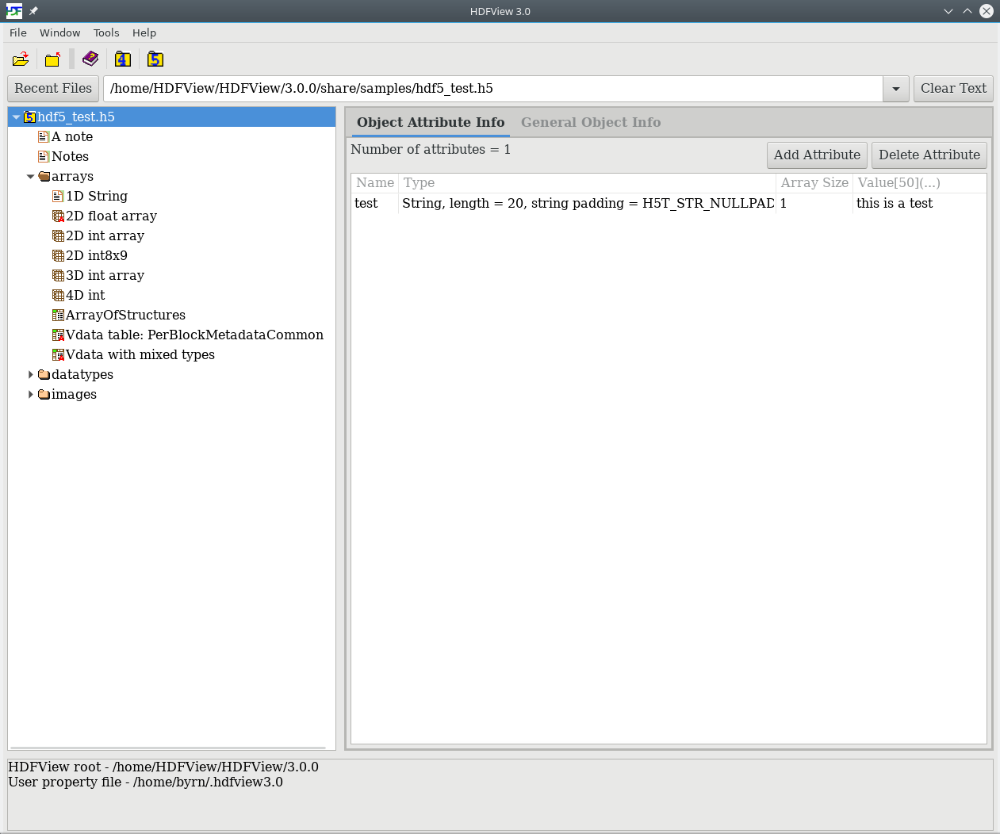
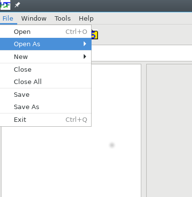
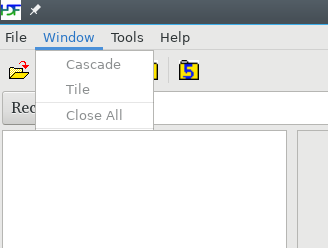
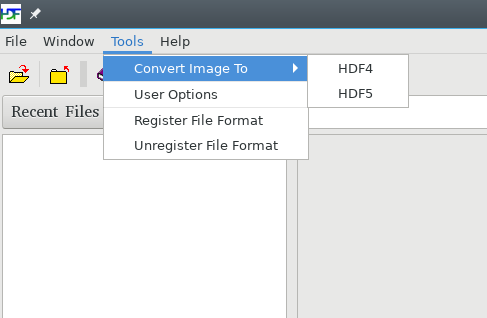
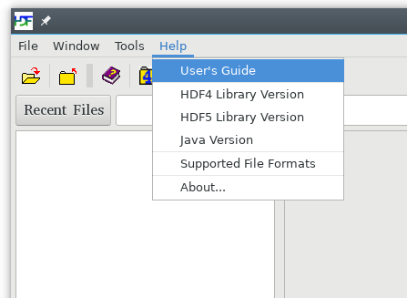
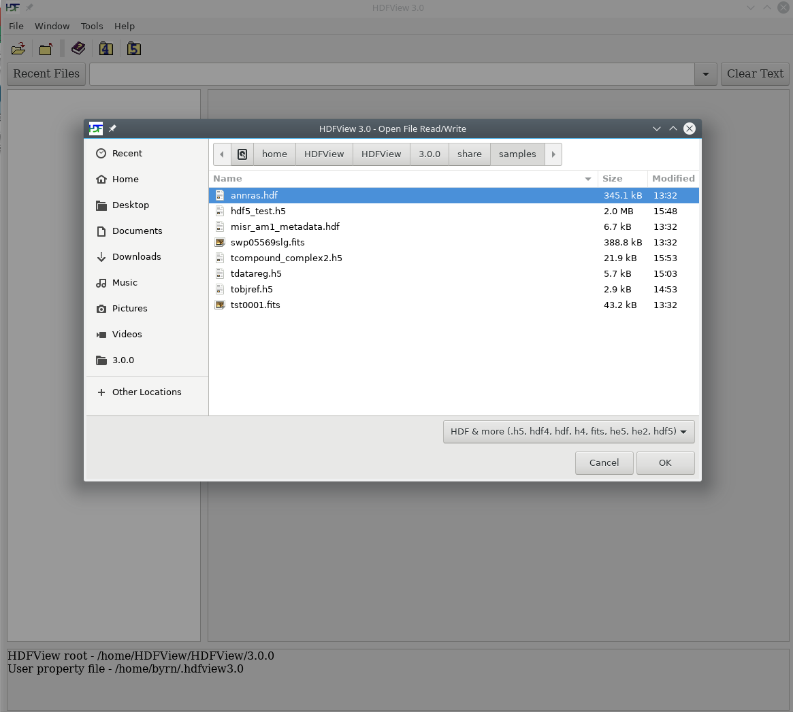
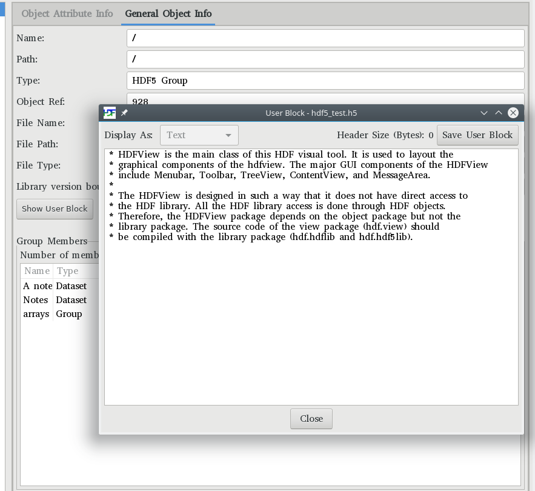

Tree view
[Index] [1] [2] [3] [4] [5] [6] [7]
This chapter assumes that you have installed HDFView and, along with “Chapter 3: The HDF Object Model,” is designed to help you get to the point where you are actually looking at HDF datasets.
When you first open HDFView, the HDFView window appears with an empty tree and metadata panel. After you open an HDF file, the structure of the file is displayed in the Tree Panel. The metadata content of a data object is displayed in the metadata panel by selecting an object.
The main window consists of five components: Menu bar, Tool bar, File bar, Tree panel, Metadata Panel, Info panel.

The main window with a file
The Menu bar is at the top of the HDFView window. You can select a menu command from menu items or press key combinations from the keyboard to invoke the menu item's action without navigating through the menu hierarchy.
File menu
The File menu contains commands to open and close files, create and save files, and
exit HDFView.

File menu

Window menu
Tools menu
The Tools menu contains a list of commands to launch tools such as
image conversion and user options. The “User Options”
command launches a dialog box that allows you to change user preferences:
the path of the User's Guide, font size, delimiter and more. For more information,
see User Options.

Tools menu

Help menu
Select the “Open” command from the file menu or click the
“Open” icon in the tool bar to invoke the local file manager,
and select a file to open from the local file manager. Selecting
“Open As Read-Only” opens a file with read-only permission,
which means that editing functions are disabled and changes are not allowed. Selecting
“Open As Read/Write” opens a file with read and write permission, hdf5 will
modify the file even if no changes are saved.
Note that HDFView defaults to
opening a file as read-only unless the default is changed in the
“User Options/General Settings” Default File Access Mode section (see
File Access).
By default, HDFView will only show files that have a file extension matching those
specified in the “User Options/HDF Settings” File Extension list (see
File Extensions), however, the user
can click on the drop-down box in the open file dialog box and select "All Files"
in order to show all files if needed.

Local file manager
An HDF file contains one or more objects, optionally grouped in a hierarchy. For general information about the structure and contents of HDF files, see the HDF documentation at HDF5 Documentation and HDF4 Documentation.
The structure of the file is displayed in the Tree panel, which is the left panel in the HDFView window. Data objects are represented as icons, and groups are represented by folders. An HDF file may contain groups, datasets (arrays), committed datatypes, and links.
The hierarchy of the file can be navigated by selecting folders to “open” a group, which displays the objects contained by the group. When an object is selected (by double clicking the object or by right clicking the object and selecting "Open" or "Open As" from the popup menu), the data is displayed appropriately in a window (usually a table or spreadsheet type.).
You can open multiple files at one time. Files are listed as root objects in the tree. The following figure illustrates that an HDF5 file, hdf5_test.h5, and an HDF4 file, annras.hdf, are currently open.
Tree view
You can also search for data objects within a file by right-clicking on the file and selecting "Find" from the Context menu. Type in the name of a data object to look for and HDFView will highlight the first occurrence of the object within the file. The wildcard '*', which specifies that any number of characters can come after the text before the '*' character, can be used to broaden your search. As an example, searching for 'dataset*' will find any objects whose name is a variation on 'dataset', i.e. 'dataset', 'dataset_int', 'dataset75', etc.
Short status information and feedback messages are displayed in the information panel. Such information includes error messages and feedback from user's actions.
To see the metadata of a data object, left-click the data object. Then, choose the “Object Attribute Info” tab to display a list of attributes attached to the selected object. The “General Object Info” tab displays various object information such as names of objects, member names and types, or paths, type and version bounds for file types.
To view a user block in text, left-click the file node (the root group) and select the “General Object Info” tab. Click the “Show User Block” button to show the user block information in text.

User block in text
The following command line options are available to HDFView:
-root path
specify the working directory to start HDFView in
-g, -geometry WIDTHxHEIGHT+XOFF+YOFF
specify the dimensions and location of the HDFView window
-java.version
display java version information
<filename>
open the specified file/s upon start
[Index] [1] [2] [3] [4] [5] [6] [7]